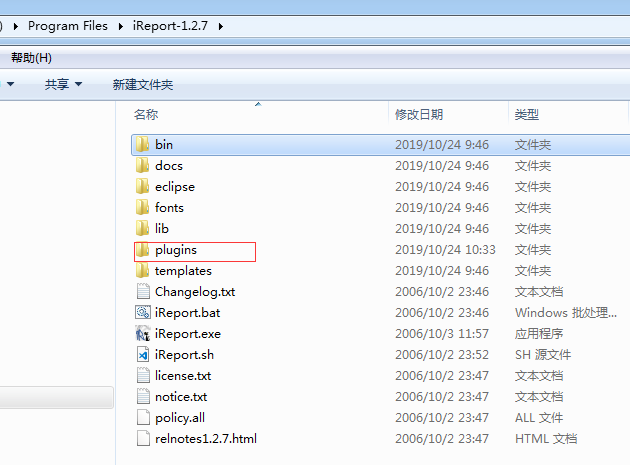
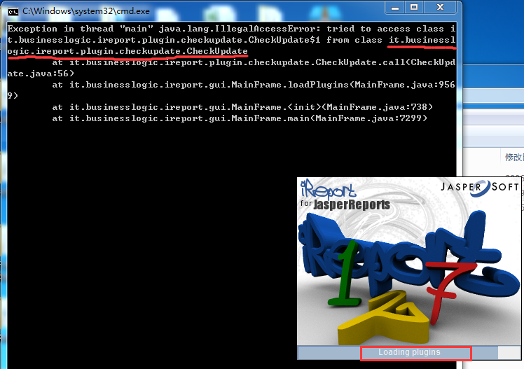
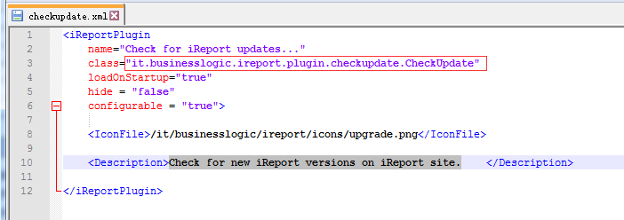
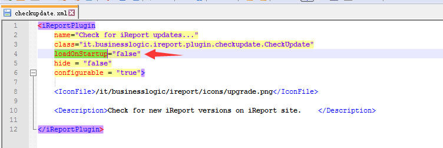

Exception in thread "main" java.lang.IllegalAccessError: tried to access class i
t.businesslogic.ireport.plugin.checkupdate.CheckUpdate$1 from class it.businessl
ogic.ireport.plugin.checkupdate.CheckUpdate
at it.businesslogic.ireport.plugin.checkupdate.CheckUpdate.call(CheckUpd
ate.java:56)
at it.businesslogic.ireport.gui.MainFrame.loadPlugins(MainFrame.java:956
9)
at it.businesslogic.ireport.gui.MainFrame.<init>(MainFrame.java:738)
at it.businesslogic.ireport.gui.MainFrame.main(MainFrame.java:7299)

加载plugin时，无法加载checkupdate.xml成功。执行it.businesslogic.ireport.plugin.checkupdate.CheckUpdate报错。

找到checkupdate.xml，关闭ireport后，将它删除掉再重启ireport后发现已经没有这个错误了找到checkupdate.xml，关闭ireport后，配置loadOnStartup为false再重启ireport后发现已经没有这个错误了
猜想：之前使用正常，电脑就杀死过一个80端口相关的进程。
执行失败原因？？？